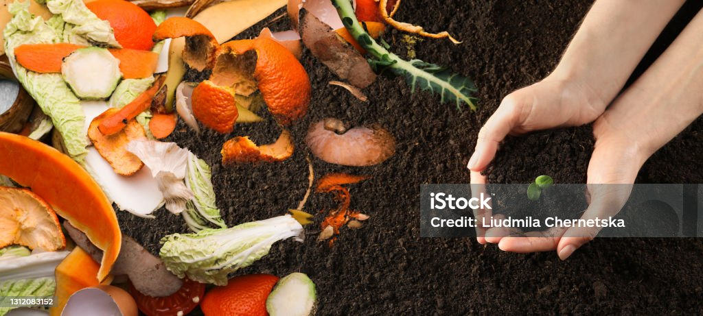

Information on Climate Justice
Composting
Composting helps reduce waste and allows people to nurish the soil we use to grow food

Photo by Liudmila Chernetska: https://www.istockphoto.com/photo/organic-waste-for-composting-on-soil-and-woman-holding-green-seedling-top-view-gm1312083152-400990837